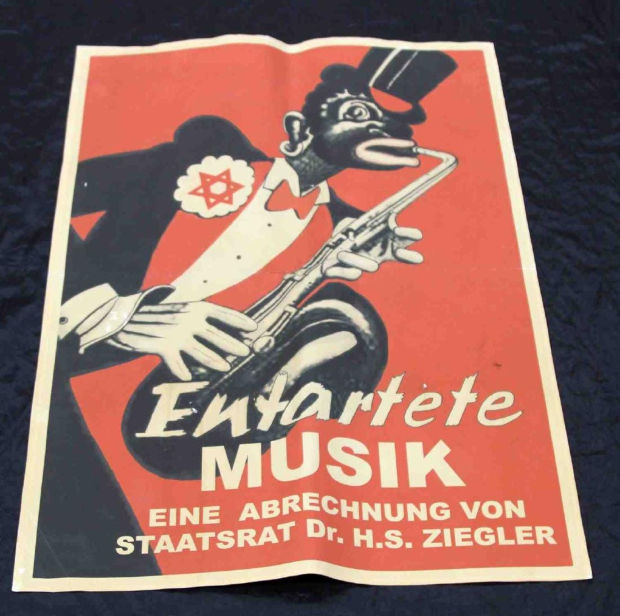

Apunts d'Història de la Música 2020-21
<< El jazz i la música popular als anys 30. L'
era del swing
Continuarà... >>
mmmmmmmmmmmmmmm.

Er avançant
ell bàndol aliat.
Rosita Serrano:
Roter Mohn
(1938).
<< El jazz i la música popular als anys 30. L'
era del swing
Continuarà... >>